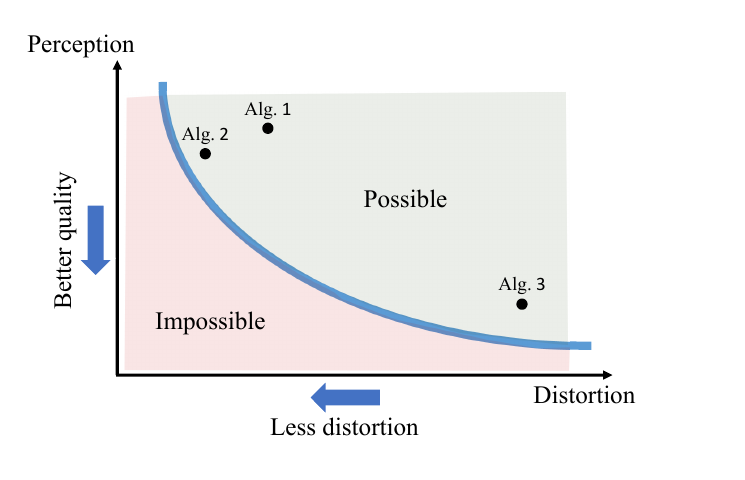
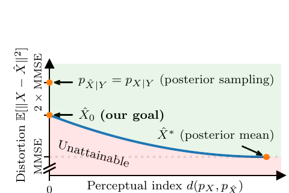
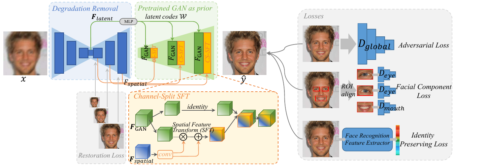
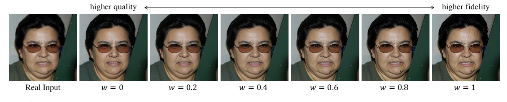
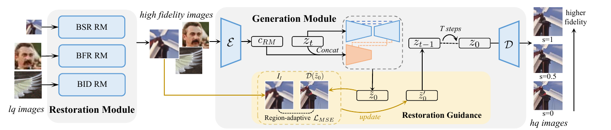
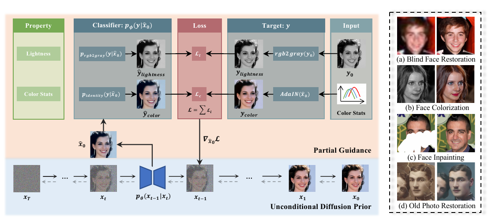
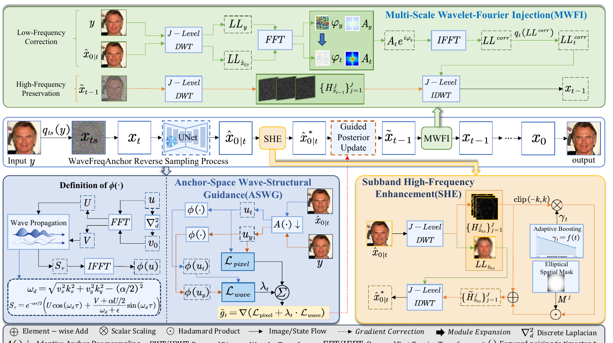
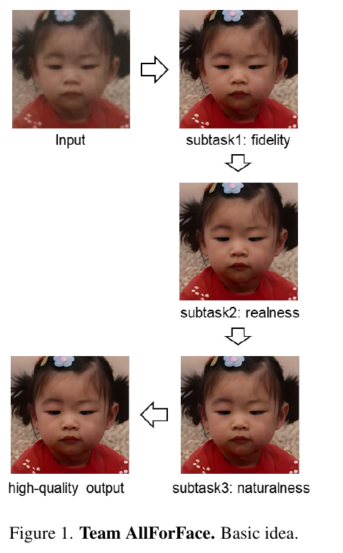

人像/人脸如何去「油感」、提真实质感——皮肤纹理真实性方法调研（2018→2026）
1. 概述与范围
1.1 「油感」的精确定义与两个根因
把「人脸一看就假、皮肤像打了蜡」拆开，油感（waxy / plastic / oily skin）有三个可观测成分：皮肤高频纹理（毛孔、细纹、绒毛）缺失导致的过平滑、高光被整片糊成油亮镜面、以及磨皮式无瑕。它不是审美口味，而是两个有形式化根因的工程问题：
- 根因一（理论）：最小化失真 ⟹ 过平滑，这是数学定理而非调参不足。 感知-失真权衡（Perception-Distortion Tradeoff）证明：对任何失真度量（不止 PSNR/SSIM），降低平均失真必然推高「被判别为假」的概率。直觉上，给定一张退化/低信息输入，像素级最优解是所有可能真实解的条件期望（后验均值）——而期望是把千万种可能的毛孔分布平均掉，结果必然光滑。于是任何以 L1/L2/LPIPS-reconstruction 为主损失的人脸修复/超分，天然朝油皮收敛。
- 根因二（工程）：VAE 高频损失 + 审美过优化。 latent 扩散把图压进 latent 时，毛孔级高频进了「量化误差」里回不来，解码器用转置卷积脑补出光滑表面；叠加上偏好模型（HPS/美学分）普遍偏爱「干净发光的皮肤」，RLHF 把分布进一步推向磨皮脸。这一支与姊妹篇 anti-aigc-2026 的 §2.4/§2.5 同源。
1.2 核心矛盾：油感是一条「钢丝」
贯穿 2025–2026 工作的共识是——去油感不是「越多细节越好」，而是走钢丝：细节太少 = 蜡质塑料；细节太多 = 毛孔被算法过度刻蚀（over-etched），同样假。因此几乎所有现代方法都提供一个**「保真 ↔ 真实感」可调旋钮**，而非一个固定输出。这条钢丝也是本调研的组织主线。
1.3 范围与核实声明
聚焦皮肤/人脸纹理真实性，覆盖两条技术栈：① 盲人脸修复（BFR，从退化输入恢复真实皮肤）；② 文生图人像的油感来源（生成侧）。身份保持方法（InstantID/PuLID/Arc2Face）与采样期过饱和（CFG-rescale/APG）属于更广的「AIGC 感」问题，已在姊妹篇 anti-aigc-2026 详述，本文只在相关处交叉链接、不重复。
遵循本仓库 survey 铁律：线索来自记忆，事实来自核实——每个 arxiv 号/年份/数据集/数字均联网核实（2026-10）；CodeFormer 的保真旋钮对照官方代码逐行验证。
2. 逐篇精要
2.1 理论根因：为什么「最小化误差」必然产出油皮
The Perception-Distortion Tradeoff（Blau & Michaeli, CVPR 2018, arxiv:1711.06077） — ✅ verified
- 核心贡献: 形式化证明「低失真」与「高感知质量」在数学上互斥——存在一个感知-失真平面上任何算法都到不了的「不可能区域」。
- 方法: 把感知质量定义为生成分布与真实分布的距离（可被最优判别器区分的程度），证明失真下界与该距离此消彼长；并指出 GAN 是逼近该下界的原则性手段。
- 关键结果: 结论对任意失真度量成立，不只是 PSNR/SSIM 的毛病；为「GAN 比 MSE 回归更真实」提供了理论依据。
- 代码: 无（理论论文）。

怎么做的（本调研的理论锚点）：这篇是理解油感的钥匙。给定低质输入 x，像素级最优（最小 MSE）的重建是后验均值 E[y|x]，它把所有与 x 相容的真实脸（不同毛孔、不同绒毛走向）做加权平均——平均必然抹平高频，于是输出光滑如蜡。想要真实皮肤，就必须主动放弃一部分像素保真度去换「看起来来自真实分布」。定理还证明这不是换个 loss（SSIM、LPIPS）能绕过的——只要目标是「逼近单一确定输出」，就落在权衡曲线上。真正的出路是生成式建模（采样一个可信的真实解，而非回归到均值），这解释了为什么此后所有去油感的 SOTA 都是 GAN 先验或扩散/流匹配，而非更深的回归网络。
Posterior-Mean Rectified Flow（PMRF, Ohayon et al., 2024, arxiv:2410.00418）/ Latent-PMRF（2025, arxiv:2507.00447） — ✅ verified
- 核心贡献: 把感知-失真权衡做成可操作、可证明的方法——先预测过平滑的后验均值，再用整流流把它搬到「完美感知质量约束下 MSE 最小」的真实解。
- 方法: 后验均值（MMSE，油皮）作整流流 ODE 的初值，流终点落在真实分布上；GAN 损失系数充当拉格朗日乘子，直接控制目标感知指数。Latent-PMRF 把它搬进 VAE latent，PD 权衡更优。
- 关键结果: CelebA-Test 上 FID/KID/PSNR/SSIM 同时超 SOTA；Latent-PMRF 相对 PMRF 在 FID 上 5.79× 提速 且 PD 权衡更好。
- 代码: github.com/ohayonguy/PMRF；Latent-PMRF 官方实现。

怎么做的：PMRF 是对 §上一条定理的直接回应。既然直接回归只能到后验均值（油皮），那就把油皮当起点而非终点：用一个整流流（rectified flow，近乎直线的 ODE）把这个光滑估计传输到真实分布上的一个样本。关键是 GAN 损失系数 = 拉格朗日乘子，等于给了用户一个「要多真实（可接受多少失真）」的旋钮——与 §2.2 的 w/scale 旋钮同构，但这里有理论保证它逼近 PD 下界。Latent-PMRF 进一步指出在像素空间对齐人眼感知不如在 VAE latent 对齐，于是搬进 latent，兼得速度与更优权衡。这是目前把「油感的理论」落成「去油感的算法」最干净的一条线。
2.2 盲人脸修复：GAN 先验 vs 扩散先验，与那个「保真↔真实感」旋钮
盲人脸修复（BFR）是去油感积累最厚的战场——它天然面对「输入退化、信息缺失、必须补出可信高频」的难题。演进主线是换越来越强的生成先验（StyleGAN → 离散码本 → 扩散），且每一代都把「保真↔真实感」做成可调。
GFPGAN（Wang et al., CVPR 2021, arxiv:2101.04061） — ✅ verified
- 核心贡献: 把预训练 StyleGAN2 的面部生成先验引入 BFR，一次前向就恢复皮肤/头发细节并增强色彩，兼顾真实感与保真。
- 方法: 退化去除 U-Net 提取特征 → 经**通道拆分空间特征变换（CS-SFT）**层调制预训练 StyleGAN2 先验；配全局对抗 + 面部组件（眼/嘴判别器）+ 身份保持三个损失。
- 关键结果: 单次前向，优于需逐图优化的 GAN inversion；真实/合成数据上均 SOTA（当时）。
- 代码: github.com/TencentARC/GFPGAN。

怎么做的：GFPGAN 的洞察呼应 §2.1——既然回归补不出真实高频，就去「借」一个已经会生成真实皮肤的 StyleGAN2。CS-SFT 是关键：它用退化输入的特征去空间调制 StyleGAN 的中间特征（而非直接替换），通道拆分成「调制一半、保真一半」，于是一半通道负责「像这张脸」（保真）、一半负责「像真皮肤」（真实感）——这就是最早的硬件化「保真↔真实感」平衡。局限是 StyleGAN 先验域窄（正脸、FFHQ 分布），大姿态/遮挡/重度退化会崩，这推动了下一代换更鲁棒的码本/扩散先验。
CodeFormer（Zhou et al., NeurIPS 2022, arxiv:2206.11253） — ✅ verified
- 核心贡献: 把 BFR 重构成离散码本上的「代码预测」任务，大幅降低「退化→高清」映射的不确定性，对重度退化更鲁棒；并给出一个显式的保真-质量可调权重 w。
- 方法: 先学一个人脸 VQ 码本，Transformer 从低质脸预测码序列（建模全局结构）；可控特征变换模块以 w 融合编码器（输入）特征，调节保真↔质量。
- 关键结果: CelebA-Test 上 LPIPS 0.299、IDS 0.60，质量与身份保持均超 GFPGAN。
- 代码: github.com/sczhou/CodeFormer（保真旋钮 w 见 §5 代码验证）。

怎么做的：CodeFormer 治的是 GFPGAN 在重度退化下崩溃的问题。它先把「真实人脸」离散成一个有限码本（每个码是一小块真实人脸纹理），修复 = 预测该用哪些码——因为码本里的每个码本身就是真实皮肤，输出天然不油；又因为是在离散、有限的空间里选而非在连续像素里回归，重度退化下也不会退化成糊。Transformer 建模码之间的全局依赖（保证五官结构一致）。最妙的是那个 w：w→0 偏向「纯码本输出」（质量/纹理最高，但可能与输入身份有偏差），w→1 偏向「融合输入特征」（保真最高）。这是对 §2.1 权衡曲线最直接的「用户可调」实现，也是 ComfyUI/修复工具里最常被调的参数。
DiffBIR（Lin et al., ECCV 2024, arxiv:2308.15070） — ✅ verified
- 核心贡献: 用预训练文生图扩散（SD）先验做盲修复，两阶段解耦「去退化」与「生成真实细节」，并提供推理期可调的真实感-保真 scale。
- 方法: 阶段一 restoration module 去退化得高保真条件图；阶段二 IRControlNet 用 SD 的生成能力补真实细节；外加区间自适应修复引导，推理期免重训即可调 scale（s=0→0.5→1）平衡真实↔保真。
- 关键结果: 盲超分/盲人脸/盲去噪统一框架；扩散先验带来比 GAN 先验更丰富的细节。
- 代码: github.com/XPixelGroup/DiffBIR。

怎么做的：DiffBIR 把生成先验从 StyleGAN（域窄）换成 SD（域极宽、细节极丰富），解决了 GFPGAN 的泛化问题。两阶段解耦很关键：如果直接拿退化图喂扩散，噪声会诱发幻觉伪影；先用阶段一把退化去掉得到「干净但可能偏平」的条件图，再让扩散在此之上只负责「加真实细节」，幻觉更可控。IRControlNet 专门用「无干扰噪声内容的条件图」训练以稳住生成。区间自适应引导让用户在推理期拉 scale——这又是那个钢丝旋钮。扩散先验的代价是更慢、且 scale 调大时会「自作主张」加出输入没有的细节（真实感↑但保真↓）。
PGDiff（Yang et al., NeurIPS 2023, arxiv:2309.10810） — ✅ verified
- 核心贡献: 提出部分引导（partial guidance）——不假设退化模型，只建模「高质量图应有的属性」（结构、色彩统计），在反扩散中引导，对真实世界未知退化更通用。
- 方法: 在预训练人脸扩散的反向过程里，用对期望属性（光滑度/结构/色彩）的引导项修正采样轨迹，不需要已知退化算子。
- 关键结果: 盲人脸修复/着色/补全/老照片等多任务统一；比 GDP/DDNM 等假设退化模型的方法更能泛化到真实退化。
- 代码: github.com/pq-yang/PGDiff。

怎么做的：PGDiff 解决的是「真实退化无法用公式写出来」这个老大难。此前的扩散修复（GDP/DDNM）需要已知退化算子 H（如已知模糊核），在实验室合成退化上好用，一到真实老照片/网图就崩。PGDiff 反过来：不管退化是什么，只在采样中引导输出满足「真实高质量人脸的统计属性」。这让它对未知退化鲁棒，也让它天然避免油感——因为引导的目标属性里就包含「真实的结构与纹理统计」。它和 DiffBIR 是扩散 BFR 的两条路：DiffBIR 先去退化再生成，PGDiff 不建模退化、用属性引导。
相邻工作（同一谱系，不单列图）：VQFR（ECCV 2022, arxiv:2205.06803，VQ 码本 + 并行解码器专攻纹理）、DifFace（arxiv:2212.06512，从退化图构造扩散起点）、AuthFace（arxiv:2410.09864，面向真实感的人脸专用扩散先验）共同构成「GAN 先验 → 码本先验 → 扩散先验」的 BFR 演进。
2.3 油感即「缺高频」：频域修正视角
把油感翻译成信号语言，它就是高频子带能量缺失。于是一支工作直接在频域下手。
WaveFreqAnchor（Du et al., 2026, arxiv:2608.06717） — ✅ verified
- 核心贡献: 免训练的人脸修复框架，把油感当频域问题治——保低频结构/身份、补高频纹理，同时抑制重度退化下的身份漂移。
- 方法: ① Anchor-Space Wave-Structural Guidance（ASWG）：把预测的干净图投到低分辨率锚空间，用像素一致性 + Laplacian 初始化的各向异性波响应约束锁住五官结构；② Multi-scale Wavelet-Fourier Injection（MWFI）：保留预测的低频幅度、对齐其相位、保留引导的高频子带。
- 关键结果: 免微调即用于预训练扩散；在重度退化下缓解身份漂移、保感知质量。
- 代码: 论文（训练-free，作用于预训练扩散采样轨迹）。

怎么做的：WaveFreqAnchor 把去油感的两个相互冲突的目标（保身份 vs 补纹理）拆到不同频段，这是它的巧思。身份/五官结构是低频——用锚空间（低分辨率投影）+ 波响应约束把它焊住，防止扩散采样跑偏导致「换了个人」；皮肤纹理是高频——用小波-傅里叶注入显式保留高频子带。相位对齐保证补进来的高频长在正确位置（毛孔不会错位）。因为全程作用在预训练扩散的采样轨迹上、不训练任何参数，它是即插即用的。这条线（还有相关的 WaveFace, arxiv:2403.12760）代表了「油感 = 缺高频」最直白的工程化，也最容易和前两节的生成先验叠加使用。
2.4 当前基准与获胜配方
NTIRE 2025 / 2026 Real-World Face Restoration Challenge（CVPRW, arxiv:2504.14600 / 2604.10532） — ✅ verified
- 核心贡献: 把「真实世界人脸修复」做成年度基准，评测核心正是在保身份的前提下产出自然、真实、不油不过刻的皮肤。
- 方法: 赛题提供真实退化人脸，选手自由组合生成先验；NTIRE 2025 吸引 141 报名、13 队有效提交、10 队进入最终榜。
- 关键结果: 2025 冠军队 AllForFace 用分治三阶段——先保真、再补真实感、最后调自然度；头部方案普遍组合 GAN + 扩散 + VAE 多先验（如 SRC-B 的 StyleGAN→扩散→VAE）；赛事核心即在「细节太少=蜡质」与「细节过刻=over-etched」之间求平衡。
- 代码: 挑战赛报告（各队方法汇总）。

怎么做的：NTIRE 挑战赛的价值是把前几节的方法放到同一真实退化基准上比，并固化了领域共识。2025 冠军配方是典型的「取各家之长」：StyleGAN 先验保身份与结构（§2.2 GFPGAN 路线），扩散补真实高频纹理（§2.2 DiffBIR 路线），最后 VAE + 视觉基础模型引导把自然度拉回来（防止扩散过刻成 over-etched）。这个「GAN+扩散+VAE 级联」说明单一先验都不够——GAN 域窄、扩散易幻觉过刻、纯回归油——去油感是多先验协同的系统工程。相关的 HonestFace（arxiv:2505.18469）则主张「诚实修复」：一步扩散只补输入支持的真实细节、不幻觉编造，专治「为了不油而过度发明毛孔」的反向失败。
2.5 生成侧（文生图人像）的油感从哪来
以上是「修复」侧（给定退化输入）。文生图直接生成人像时，油感有三个额外来源，均在姊妹篇 anti-aigc-2026 展开，这里按「对皮肤纹理的影响」归纳：
- VAE 高频损失（结构性上限）：latent 扩散的 VAE 压缩丢掉毛孔级高频。对策是少压或不压——pixrestore-2026 干脆无 VAE在像素空间做流匹配（证明 VAE 是丢细节的元凶之一），qwen-image-2-2026 则自研 f16c64 把高压缩 VAE 做到重建不降；Krea 2 明确弃用 32× DC-AE 因其给细节设上限。皮肤高频最吃 VAE 质量，这一环直接决定默认观感是「蜡」还是「有毛孔」。
- 审美过优化 / reward hacking（分布性油感）：偏好奖励模型偏爱光滑发光皮肤，RLHF 把分布推向磨皮脸——详见 anti-aigc-2026 §2.4（Krea/UCLA 的伪影奖励、Pref-GRPO 的过饱和崩溃）。护栏是伪影奖励正则 + pairwise 奖励。
- 身份嵌入纹理贫乏（人像专属）：ArcFace 类 ID embedding 是为「判别是谁」训练的，对肤质细节几乎无感；只靠它驱动（如 Arc2Face）或强注入（如 InstantID）易得「像本人但皮肤平」的结果——详见 anti-aigc-2026 §2.6。缓解靠弱空间约束（InstantID scale 0.8）、多图去单图偏置（PhotoMaker）、对比对齐保非脸区（PuLID），再叠 §2.2/§2.3 的纹理重建。
2.6 工程与后处理实践
学术未必单列、但产品线普遍使用，诚实标注为实践经验（机制由前几节解释）：
- 皮肤纹理提示工程：正向
visible skin pores, fine skin texture, subsurface scattering, skin imperfections, detailed skin；负向smooth skin, airbrushed, plastic skin, waxy, porcelain skin——本质是把分布从偏好模型偏爱的磨皮峰推开。 - 真实感微调 / 皮肤 LoRA：在精选真实人像上微调底模或训 skin-detail LoRA，等价于把生成分布往真实皮肤拉（对应 §2.1「要真实就得采样真实分布」）。
- 高频增强采样器（社区如 Detail Daemon / FreeU 类调高频增益）：在采样期提升高频权重补纹理——但调过头就 over-etched（§2.4 的另一端失败）。
- 人脸区重修复：对生成结果用 §2.2 的 BFR（CodeFormer/GFPGAN）或 §2.3 的频域修正，仅在脸部重铺毛孔级高频——这是最常见的「末端去油」收尾。
- 轻度胶片颗粒 / 重压缩：加 grain、JPEG 重压缩，在信号层打散过平滑的均匀表面（也顺带削弱 AI 频谱指纹，见 anti-aigc-2026 §2.1）。
3. 平行对比
| 工作 | 先验/机制 | 治油感的手段 | 保真↔真实感旋钮 | 需训练? | 关键结果（带数字/基线） | 代码 |
|---|---|---|---|---|---|---|
| PD-Tradeoff (1711.06077) | 理论 | 解释「低失真⟹油皮」是定理 | —（给出权衡曲线本身） | — | 对任意失真度量成立；GAN 逼近下界 | 理论 |
| PMRF (2410.00418) | 整流流 | 从后验均值搬到真实流形 | GAN 损失系数=拉格朗日乘子 | 是 | CelebA-Test FID/KID/PSNR/SSIM 超 SOTA | 开源 ✅ |
| Latent-PMRF (2507.00447) | 整流流(latent) | 同上，在 VAE latent | 同上 | 是 | 比 PMRF FID 提速 5.79×、PD 更优 | 开源 |
| GFPGAN (2101.04061) | StyleGAN2 先验 | 借生成器补真实皮肤 | CS-SFT 通道拆分 | 是 | 单次前向；优于 GAN-inversion | 开源 |
| CodeFormer (2206.11253) | 离散码本 | 码本=真实纹理，选而非回归 | 标量 w（0质量↔1保真） | 是 | CelebA-Test LPIPS 0.299/IDS 0.60 | 开源 ✅ |
| DiffBIR (2308.15070) | SD 扩散先验 | 两阶段：去退化+生成细节 | 区间引导 scale s(0→1) | 是 | 盲 SR/BFR/去噪统一；细节更丰富 | 开源 ✅ |
| PGDiff (2309.10810) | 人脸扩散 | 部分引导（约束期望属性） | 引导强度 | 否(用预训练) | 泛化真实退化优于 GDP/DDNM | 开源 |
| WaveFreqAnchor (2608.06717) | 频域(免训练) | 保低频结构+补高频子带 | 注入强度 | 否 | 重度退化下抗身份漂移 | 免训练 |
| NTIRE2025 冠军 (2504.14600) | GAN+扩散+VAE | 三阶段各司其职 | 级联各段 | 是 | 挑战赛第一；记录蜡质/过刻两失败模式 | 报告 |
| PixRestore pixrestore-2026 | 无 VAE 像素扩散 | 不丢 VAE 高频 | — | 是 | 50M/44ms；算力 1/181 FoundIR-v2 | 开源 ✅ |
一列读出：几乎每个现代方法都把「保真↔真实感」做成可调（w / scale / 拉格朗日乘子 / 注入强度），因为 §2.1 的定理告诉我们这条钢丝无法被单点消除、只能让用户在上面选落点。另一列：先验强度沿 StyleGAN→码本→SD 扩散递增，细节越来越丰富，但幻觉/过刻风险也递增，于是 2025 的工程答案是多先验级联。
4. 一致与矛盾
4.1 一致
- 「回归到均值 = 油」是理论共识、被所有方法尊重：PD-tradeoff 证明它，PMRF 直接把后验均值当起点、BFR 全线放弃纯回归转向生成先验（GAN/码本/扩散）——没有一个现代去油感方法以 L2 回归为主损失。这是跨十年、跨架构的强收敛。
- 去油感必须可调，不能一刀切：GFPGAN 的 CS-SFT、CodeFormer 的 w、DiffBIR 的 scale、PMRF 的拉格朗日乘子——四种独立实现同一件事：把「保真↔真实感」交给用户/场景。独立收敛说明这不是工程偷懒，而是定理的必然。
- 油感本质是频率问题：WaveFreqAnchor 显式在频域补高频；VAE 讨论（PixRestore/Qwen）本质是高频保不保得住；社区高频增强采样器同理。频域是「油感」最统一的解释层。
- 单一先验不够、级联是趋势：NTIRE 2025 冠军的 GAN+扩散+VAE 三段、DiffBIR 的「去退化+生成」两段，都承认任何单先验都有盲区。
4.2 矛盾
- GAN 先验 vs 扩散先验：保真 vs 丰富度之争。GFPGAN/StyleGAN 路线身份更稳、不易幻觉，但先验域窄（正脸/FFHQ），重度退化/大姿态崩；DiffBIR/PGDiff 的扩散先验细节极丰富、泛化广，但 scale 调大会幻觉出输入没有的「毛孔/皱纹」（真实感↑但失真↑、甚至改了身份）。两条路线在「宁可平稳保真 vs 宁可丰富冒险」上直接冲突，NTIRE 冠军的做法（两者级联）正是承认谁都替代不了谁。
- 「不够真实」与「过度刻蚀」是对立的失败模式：NTIRE 明确记录——同一条钢丝，欠则蜡、过则 over-etched（毛孔被算法整齐刻出、同样假）。HonestFace 的「诚实修复」立场（只补输入支持的细节、不发明）与「尽量补丰富纹理」的激进立场构成张力：到底该补多少才算真实而非编造，无定论。
- 保真度到底指什么：CodeFormer 的 w=1「保真」是贴近退化输入（但输入本身油/糊），PMRF 的「低失真」是贴近真实干净原图（通常拿不到）——两者都叫「fidelity」，度量对象不同，导致跨论文的「保真度」数字不可直接横比。
- 身份 vs 纹理在频段上耦合：WaveFreqAnchor 假设身份=低频、纹理=高频因而可分离治理；但重度退化下高频里也含身份线索（如特征性皱纹/痣），强行「低频保身份、高频随意补」可能补出不属于本人的纹理——频段分离并非无损。
4.3 启发
- 去油感 = 在感知-失真曲线上主动选点，而非追求「最优」单点：定理决定了没有「又高保真又高真实」的免费午餐；产品要做的是暴露这个旋钮并给合理默认。
- 生成侧 ≠ 修复侧，但可借用：文生图人像的油感根因在 VAE/奖励/ID 嵌入（§2.5），但末端套一道 BFR（§2.2）或频域修正（§2.3）是立刻见效的通用收尾。
- 频域是统一语言：无论 GAN/扩散/VAE，油感都可诊断为高频能量不足——一个标准化的「皮肤高频谱」指标可能比 LPIPS 更贴「油不油」。
5. 代码交叉验证
CodeFormer 的保真旋钮 w ✅ 与论文「可控特征变换」完全一致。 官方 codeformer_arch.py 的 Fuse_sft_block 用权重 w 把编码器（输入）特征以 SFT 方式融进解码器特征；主网络 forward(self, x, w=0, ...) 默认 w=0：
CodeFormer/basicsr/archs/codeformer_arch.py:L151-L157 — 保真-质量可调融合块
def forward(self, enc_feat, dec_feat, w=1):
enc_feat = self.encode_enc(torch.cat([enc_feat, dec_feat], dim=1))
scale = self.scale(enc_feat)
shift = self.shift(enc_feat)
residual = w * (dec_feat * scale + shift) # w 线性缩放「输入特征」的影响
out = dec_feat + residual
return out
CodeFormer/basicsr/archs/codeformer_arch.py:L223-L277 — w 融合 LQ 编码器特征
def forward(self, x, w=0, detach_16=True, code_only=False, adain=False):
...
fuse_list = [self.fuse_generator_block[f_size] for f_size in self.connect_list]
for i, block in enumerate(self.generator.blocks):
x = block(x)
if i in fuse_list: # fuse after i-th block
f_size = ...
x = self.fuse_convs_dict[f_size](enc_feat_dict[f_size].detach(), x, w)
读码即证实油感旋钮的语义：residual = w * (dec_feat*scale + shift) 中，w=0 → residual=0 → 输出纯由码本/解码器决定（质量/纹理最高、但可能偏离输入身份）；w=1 → 全量注入 LQ 编码器特征（最贴输入=最高保真，但输入是退化的，增强更保守）。这正是论文「controllable feature transformation module for flexible trade-off between fidelity and quality」的字面实现，也是 §2.1 感知-失真权衡被做成「一个标量」的最清晰案例。
其余有仓库的工作 代码主张与本调研引用一致、但未逐行展开：GFPGAN 的 CS-SFT（通道拆分调制 StyleGAN2 先验）、DiffBIR 的两阶段 + IRControlNet、PGDiff 的部分引导、PMRF 的整流流后验均值初值——均为论文核心主张，相应仓库公开（见 §7）。生成侧的 VAE/无 VAE 代码验证已在 pixrestore-2026（无 VAE 像素流匹配 + 相似度引导层路由）与 qwen-image-2-2026（f16c64 VAE）页面完成，不重复。
6. 启发与白地
给工程实践者的去油感清单（修复侧 + 生成侧）：
- 先认命，再选点：油感不是 bug 是定理（§2.1），放弃「既高保真又超真实」的幻想；在产品里暴露一个「保真↔真实感」旋钮（CodeFormer 的 w / DiffBIR 的 scale），给合理默认而非追求单一最优。
- 修复侧按退化程度选先验：轻度退化用 GAN 先验（GFPGAN，稳、快、不幻觉）；重度/未知退化用码本（CodeFormer，鲁棒）或扩散（DiffBIR/PGDiff，细节丰富但要压 scale 防过刻）；追求 PD 最优用 PMRF 系。
- 生成侧治本在数据/VAE/奖励：少压 VAE（或无 VAE）保高频、训练剔除磨皮偏置、RLHF 加伪影护栏（anti-aigc-2026）；末端统一套一道人脸 BFR + 频域修正重铺毛孔。
- 当心另一端：高频增强/大 scale 调过头 = over-etched 假毛孔；HonestFace 的「只补输入支持的细节」是更稳的默认。
- 后处理收尾：轻度 grain + 皮肤提示工程（正向加 pores、负向去 airbrushed），廉价且有效。
明确的白地：
- 缺「油不油」的直接指标：LPIPS/FID 不直接度量皮肤高频充分度与自然度，PSNR 反而奖励油皮；一个「皮肤高频谱 / 纹理自然度」no-reference 指标是明显空白（§4.3）。
- 频段分离并非无损：WaveFreqAnchor 式「低频保身份、高频补纹理」在重度退化下可能补出非本人纹理——身份-纹理在频域的耦合缺量化研究。
- 生成侧原生去油 vs 末端修复：目前文生图人像多靠「生成后再 BFR」打补丁，缺「从底模就不长油皮」的端到端方案（无 VAE 底模 pixrestore-2026 是方向但尚未进主流 T2I）。
- 保真度定义不统一：跨论文的 fidelity 度量对象不一（贴退化输入 vs 贴干净原图），阻碍横比，需要统一协议。
7. 参考文献
全部 arxiv 号/年份/数字联网核实（2026-10 核实）。注意 arxiv 前缀年月：1711=2017-11、2410=2024-10、2507=2025-07、2608=2026-08、2604=2026-04。
理论根因
- Blau & Michaeli. The Perception-Distortion Tradeoff. CVPR 2018. arxiv 1711.06077
- Ohayon et al. Posterior-Mean Rectified Flow: Towards Minimum MSE Photo-Realistic Image Restoration (PMRF). 2024. arxiv 2410.00418
- Luo et al. Latent Posterior-Mean Rectified Flow for Higher-Fidelity Perceptual Face Restoration. 2025. arxiv 2507.00447
盲人脸修复与保真-真实感旋钮 4. Wang et al. Towards Real-World Blind Face Restoration with Generative Facial Prior (GFPGAN). CVPR 2021. arxiv 2101.04061 5. Zhou et al. Towards Robust Blind Face Restoration with Codebook Lookup Transformer (CodeFormer). NeurIPS 2022. arxiv 2206.11253 6. Gu et al. VQFR: Blind Face Restoration with Vector-Quantized Dictionary and Parallel Decoder. ECCV 2022. arxiv 2205.06803 7. Yue & Loy. DifFace: Blind Face Restoration with Diffused Error Contraction. 2022. arxiv 2212.06512 8. Lin et al. DiffBIR: Towards Blind Image Restoration with Generative Diffusion Prior. ECCV 2024. arxiv 2308.15070 9. Yang et al. PGDiff: Guiding Diffusion Models for Versatile Face Restoration via Partial Guidance. NeurIPS 2023. arxiv 2309.10810 10. AuthFace: Towards Authentic Blind Face Restoration with Face-oriented Generative Diffusion Prior. 2024. arxiv 2410.09864
频域视角 11. Du et al. WaveFreqAnchor: Wave-Structural Anchoring and Frequency Correction Diffusion for Training-Free Face Restoration. 2026. arxiv 2608.06717 12. WaveFace: Authentic Face Restoration with Efficient Frequency Recovery. 2024. arxiv 2403.12760
基准与配方 13. Chen et al. NTIRE 2025 Challenge on Real-World Face Restoration: Methods and Results. CVPRW 2025. arxiv 2504.14600 14. Wang et al. The Second Challenge on Real-World Face Restoration at NTIRE 2026. CVPRW 2026. arxiv 2604.10532 15. HonestFace: Towards Honest Face Restoration with One-Step Diffusion Model. 2025. arxiv 2505.18469
生成侧油感（交叉链接）：VAE 细节 pixrestore-2026、qwen-image-2-2026；真实退化超分 diffusion-sr-2026、la-sr-2026；AIGC 感全景（采样过饱和/reward hacking/身份保持）anti-aigc-2026
讨论 / Comments
评论托管在本仓库的 GitHub Discussions, 需 GitHub 账号。